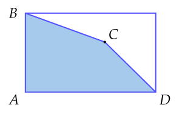

Câu 1. Đại số
Phần I — Trắc nghiệm chọn một phương án
0,22 điểm
Mệnh đề phủ định của mệnh đề $Q:\forall \,x∈ ℤ,\,2x^2 - 5 > 0$ là
Câu 13. Đại số
Phần II — Trắc nghiệm đúng hoặc sai
0,8 điểm
Cho mệnh đề chứa biến $P(x):$ " $x^2 > 4$ ".
(Nhấp vào ô màu vàng để chọn đúng / sai)
Mỗi ý a), b), c)… là một phát biểu độc lập: nhấp vào ô để chọn Đúng/Sai,
0,2 điểm mỗi ý.
Câu 14. Đại số
Phần II — Trắc nghiệm đúng hoặc sai
0,8 điểm
Cho hai tập hợp $A=\{ x∈ ℝ\,\big | -9≤ x\lt 3 \}$ và $B=(-∞ ;3]$ .
(Nhấp vào ô màu vàng để chọn đúng / sai)
Mỗi ý a), b), c)… là một phát biểu độc lập: nhấp vào ô để chọn Đúng/Sai,
0,2 điểm mỗi ý.
Câu 15. Đại số
Phần II — Trắc nghiệm đúng hoặc sai
0,8 điểm
Cho hệ bất phương trình $\left\{ \begin{aligned}& 2x+5y≥ 30 \\& 2x+y≥ 14 \\& 0≤ x≤ 10 \\& 0≤ y≤ 9 \\ \end{aligned} \right.\,\,\,(I)$ .
(Nhấp vào ô màu vàng để chọn đúng / sai)
Mỗi ý a), b), c)… là một phát biểu độc lập: nhấp vào ô để chọn Đúng/Sai,
0,2 điểm mỗi ý.
Câu 16. Đại số
Phần II — Trắc nghiệm đúng hoặc sai
0,8 điểm
Cho $\cos \alpha =\dfrac{1}{3}$ với $0°\lt \alpha \lt 90°$ .
(Nhấp vào ô màu vàng để chọn đúng / sai)
Mỗi ý a), b), c)… là một phát biểu độc lập: nhấp vào ô để chọn Đúng/Sai,
0,2 điểm mỗi ý.
Câu 19. Đại số
Phần IV — Tự luận
0,84 điểm
Lớp 10A có $45$ học sinh, trong đó có $18$ học sinh tham gia cuộc thi vẽ đồ họa trên máy tính, $24$ học sinh tham gia cuộc thi tin học văn phòng cấp trường và $9$ học sinh không tham gia cả hai cuộc thi này. Tính số học sinh của lớp 10A tham gia đồng thời cả hai cuộc thi.
Bài làm của bạn:
Câu 20. Đại số
Phần IV — Tự luận
0,84 điểm
Một đội sản xuất cần $55$ giờ để làm xong một sản phẩm loại (I) và $45$ giờ để làm xong một sản phẩm loại (II). Biết thời gian tối đa cho việc sản xuất hai sản phẩm trên là $180$ giờ. Nếu $x,\,y$ $(x,\,y∈ ℕ)$ lần lượt là số sản phẩm loại (I), loại (II) mà đội làm được trong thời gian cho phép thì $x,\,y$ phải thỏa mãn bất phương trình $ax+9y≤ b$ $(a,b∈ ℕ)$ . Tính $T= 2a+b$ .
Bài làm của bạn:
Câu 21. Hình họcKhông vẽ hình
Phần IV — Tự luận
0,84 điểm
Một hộ nông dân định trồng đậu và cà trên diện tích $900$ m ² . Nếu trồng đậu thì cần $20$ công nhân và thu $4\,000\,000$ đồng trên $100$ m ² , nếu trồng cà thì cần $30$ công nhân và thu $5\,000\,000$ đồng trên $100$ m ² . Tính số tiền (triệu đồng) mà hộ nông dân thu được nhiều nhất khi tổng số công nhân không quá $240$ .
Bài làm của bạn:
Câu 22. Hình họcCó vẽ hình
Phần IV — Tự luận
0,84 điểm
Một mảnh đất hình chữ nhật bị xén đi một góc, phần còn lại có dạng hình tứ giác $A B C D$ với độ dài các cạnh là $AB=30$ m, $BC=28$ m, $CD=26$ m, $DA=40$ m.

Tính diện tích mảnh đất $A B C D$ . (Kết quả làm tròn đến hàng đơn vị theo đơn vị m ² ).